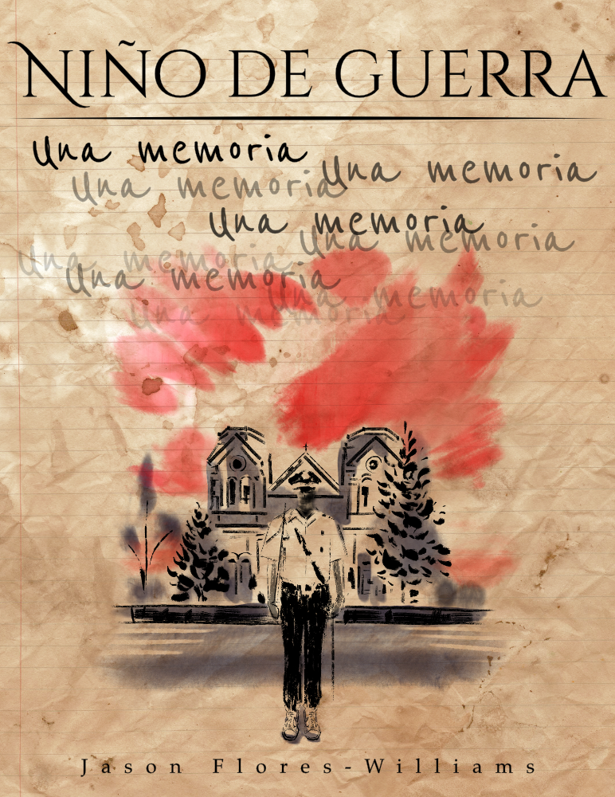

De la memoria Niño de Guerra…

Fue a principios de los años 80, mi papá, Drake, había hecho una fortuna —legalmente, en su mayoría— en el mundo de los negocios. Vance, su hermano gemelo idéntico, un criminal, había hecho un buen fajo con la mota. Todos se forraron. Nos mudamos de Houston a Santa Fe, Nuevo México, donde empecé la secundaria en la Saint Francis Junior High a mediados del séptimo grado.
Fingimos que las clases sociales no existen en los Estados Unidos, pero da un salto en los estratos —hacia arriba o abajo— y lo sentirás.
Yo estaba en una práctica de baloncesto en St. Francis y mis tenis estaban notablemente gastados. El entrenador y otro jugador, que generalmente eran buenos tipos, dijeron algo acerca de mis zapatos. Les respondí que Oshman[1] iba a rematar los Nike Slam Dunks por sólo $14.99 y que mi mamá me iba a llevar allí el sábado. El entrenador giró los ojos en modo burlón y dijo a otro jugador:
—¿Oíste a este niño rico...? ¿Para qué tiene que esperar por esas ventas de rebajas?
—Sí, si él tiene todo lo que quiere.
Ese sábado me monté en el coche con mi mamá, Camille, una chicana de clase media-baja de El Paso. Tenía un folleto de Oshman y había circulado cuidadosamente, con pluma roja, los tenis de bota que pensó que me gustarían. Iba a ser nuestro día especial, pero los comentarios en el gimnasio me habían calado. Mis zapatos estaban más destartalados que los de los otros chavos, pero me sentía culpable de poder tener un nuevo par. Estaba perdiendo mi sentido de saber dónde encajaba.
Mis inseguridades eran intensificadas por quien me lo daba todo. Según Drake, yo era un mocoso malcriado y malagradecido. Él se había levantado de las cenizas, mientras que yo había nacido en cuna de oro. Todo lo que yo tenía que hacer era seguir respirando para heredar el fruto de su genial labor.
El viejo había empezado a darle a la cocaína. Santa Fe era un lugar chic para el jet-set de principios de los 80 y él fue seducido por todo eso. Tenía un nuevo grupo de amigos y dinero para aventar al aire. Vance venía un par de veces al mes. No traficaba coca porque era un juego distinto, más peligroso, pero si la trocaba por mota para contar, por decir lo menos, con amplias cantidades para disfrute personal. Pocos se vuelven tan adictos a las rayas como para necesitarlo todos los días. Es más bien buscar coca cada vez que salen. Y cuando te metes coca, tiendes a salir bastante. Las noches que antes terminaban a las once ahora seguían hasta el amanecer. La química del cerebro empieza a cambiar. En estrictos términos psicoanalíticos, te vuelves un culero.
Mamá tomó la dirección opuesta y se sumió en el catolicismo. Nos llevaba a mi hermana Sarah y a mí a la iglesia los domingos, y siempre iba sola a misa de 7 todos los días, cocinaba para los curas y se metió al coro. Su santuario para escapar era la Catedral de San Francisco, esa iglesia grande y famosa que se yergue sobre el centro de la ciudad, la misma sobre la que Willa Cather escribió en
La muerte le llega al Arzobispo.
Nos mudamos a una casa aún más grande en Hyde Park. La realidad era esquizofrénica. Un fin de semana la peña de Drake se encerraba en su estudio a oír a Chick Corea hasta las seis de la mañana. El fin siguiente mamá recibía a sus amigos de la iglesia para una tarde de lotería en la que hacían chascarrillos y charadas. Nuestra pequeña versión del sueño americano empezaba a fracturarse.
En octavo grado empecé a ir a St. Mike’s, la escuela católica más importante de Santa Fe. Yo quería irme por la derecha —sacar buenas calificaciones, jugar football—.
Un día volví a casa del entrenamiento y me encontré a mamá y papá sentados sombríamente en la cocina. Me senté con ellos en mis fundas blancas. Después de algunos dimes y diretes, mamá me explicó que papá había sido acusado por el gobierno federal por “algo que ver con drogas ilegales”. Dijo que Vance se había metido en problemas y que nos había embarrado. Habían hecho malabares intentando restarle importancia, pero a partir de este momento Drake se movería sin parar. Se iría a Houston —donde tendría lugar el juicio— para reunirse con sus abogados, luego pasaría días con Vance y mis otros tíos que también habían sido acusados. A Drake se le acercaba la lumbre por ambos extremos de la mecha, colgado por la presión y la adicción. Cuando pienso en él durante aquel tiempo escucho un grito agudo en mi cabeza.
Al quebrarse bajo el peso de la acusación y la coca, Drake se volvió un monstruo. Estoy seguro de que engañaba a mamá. Era abusivo. Recuerdo que una vez mamá estaba preparándole el desayuno. Yo ya había aprendido a mantener mi distancia y estaba sentado al otro lado de la habitación. Él quería huevos con chorizo, pero no había. Se levantó, golpeó la mesa de la cocina, le torció el brazo casi hasta rompérselo y le gritó:
—¡Puedo hacer que cualquier mujer que se me antoje me haga el desayuno!
—Prdóname, Drake, perdóname. Voy a la tienda en este momento —Le imploró Camille llorando de dolor.
—¡Por supuesto que lo harás, carajo, porque estás jodida! —Escupió Drake con más veneno.
Mi padre era un hombre intimidante. Pero fui a la cocina y le dije con voz vacilante
—No, el jodido eres tú.
—¿De verdad? —Se movió hacia mí.
Corrí por las escaleras y salí por la puerta. Podía oírlo adentro, enfurecido con ella. Me escondí en el acceso por unas horas hasta que se fue en su Mercedes Benz al aeropuerto.